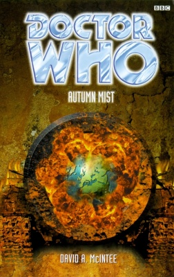

|
Autumn Mist
|
BASIC PLOT DOCTOR COMPANIONS MATERIALISATION CIRCUIT Pg 196 A couple of yards across from where it was, but now around a tank. Pg 201 Just under the Rift, at the Schnee Eifel. Pg 217 The Philadelphia dockyard, during the Philadephia Experiment, October 28th, 1943. Pg 220 On board the USS Eldridge at the Philadelphia Experiment. Pg 233 A clearing near the Rift, back in late 1944. PREPARATORY READING It's also kind of the middle of a trilogy of stories which says 'goodbye' to Sam, but connections to both Unnatural History and Interference are minimal and mostly irrelevant. You can get what you need within this very reference guide... CONTINUITY REFERENCES Pgs 1-2 "Was the Sam he had slept with in San Francisco in any way the same Sam who was with them now?" Unnatural History. See also continuity cock-ups. Pg 2 "He wondered if the Doctor had ever been tempted over all his years of travels with pretty girls. Probably not, he decided. That would be too obvious somehow." We thought we'd take this opportunity to remind you of Warmonger. There, aren't you glad that we did? Pg 3 "The destination monitor was reading TEMPORAL ORBIT when Fitz reached the console room." From the Telemovie, and used as a convenient 'parking' mode for the TARDIS ever since. "I can't get the TARDIS away from Earth." It's been locked on there since Dominion, but it's getting even more stubborn now. All will be explained in Interference part I. Pg 4 "I certainly never intended us to be hauled off to Skaro." War of the Daleks. Pg 6 "'The Evergreen Man,' a presence in the tree line opined to its neighbour." This is a description that the Doctor used for himself in Vampire Science. His seeming ignorance of it in this novel, therefore, is a little weird. Pg 7 "'Haven't seen one of those in years.' 'A mystery play?' 'No, a Christmas.'" And then two come along at once: The Christmas Invasion and The Runaway Bride. Sam wished for a moment that she had brought along the postcards her other self had left for her, after her experiences in San Francisco." Unnatural History. Pg 8 "Fitz suddenly felt uneasy. Wartime. Fitz the Fritz. Laughing kids and fights." We learned a lot about Fitz's being bullied as he grew up in The Taint. Pg 17 "The Doctor and Fitz were whistling 'Colonel Bogey' and harmonising together as they walked down the road in search of another bridge." Over the River Kwai, we presume? The fourth Doctor also whistles Colonel Bogey several times, most notably in The Talons of Weng-Chiang. Pg 19 "The Doctor was already hurrying towards the jeep, only the faintest hint of a shadow preceding him." Unnatural History saw Faction Paradox (probably) remove the Doctor's shadow. All will be explained in Interference part II. Pg 26 "I guess the war changes you." So does The War Games, if you're the Doctor. Pg 27 "but the part of her that was still a Coal Hill teenager." The Eight Doctors. Pgs 38-39 "'Can you really fly one of these?' Weisniewski asked belatedly. 'Let's find out!' the Doctor replied cheerfully, starting the engine." Very similar to a sequence in Fury from the Deep, which then involved a helicopter. Pg 41 Fitz is speaking to his German commanding officer: "'I'm not sure. There was...' He cleared his throat. 'A temporal anomaly.'" Is it just me, or aren't you just dying to know what the German for 'temporal anomaly' is? Pg 47 "It was an odd thing, he noticed, that the more corrupt and evil a regime was, in his experience anyway, the better fashion sense it seemed to have. Why was that? Maybe there was some sort of natural law that said every race of bad guys in the universe had to have at least one positive attribute in their nastiness, however small. Take the Ruin, for instance. Probably wonderful to their mums." Dominion. And see continuity cock-ups. Pg 52 "'Ever been to the States?' 'A couple of times, DC and San Francisco.'" It's unclear when Sam's been to Washington - she might be bluffing, she might have visited with her parents, or it might be an attempt to reference Option Lock, some of which was set there, even if Sam never went. San Francisco is, fairly obviously, from Vampire Science and Unnatural History. Pg 58 "'I can't spare the men or the equipment.' 'A motorcycle, then -'" The Doctor's wish for a motorcycle harks back to the Telemovie. He's just a bit of a Hell's Angel at heart, isn't he? Pg 69 "There were always patterns in things. He considered asking one of the humans to try, since they had an innate talent for this sort of thing." As observed in the Telemovie. "To punish him for allowing the things that had happened to her in Sweden and San Francisco?" Dominion and Unnatural History. Pg 78 "'Bodies vanish and go undiscovered all the time,' Garcia protested. 'Not from hospitals,' the Doctor countered, then seemed to think twice. 'Well, except under some pretty exceptional circumstances.'" The Telemovie, and it's quite a cute joke actually. Pg 83 "'The problem with cheating Death is that he's a sore loser at the best of times.' 'Yes,' the Doctor agreed mildly, 'she is.'" The Doctor met Death in the NAs on regular occasions. "'Probably start asking nonsense about your mother.' The Doctor sniffed. 'I'm afraid they'd only get nonsense back, then.'" The Telemovie, and fair enough. Pg 91 "'Lost friends and lost souls,' he murmured to himself." Sounds like the famous line from Ghost Light, but not quite. Pg 96 "The world asks a high price for knowledge, Captain." This could be alluding to the NAs, particularly the death of Roz Forrester and the way it was foretold in Ben Aaronovitch novels. Pg 98 "Before the TARDIS had got so hooked on dropping them all in it in a variety of crap Earth locations." Dominion and Unnatural History again. Pg 101 Mention of transmat (The Seeds of Death etc). Pg 104 "Although she recognised herself, and recognised many of the images that flashed past her, there were others that were simply... wrong." It's not clear, but this could be the remnants of the Dark Sam persona from Unnatural History. Pg 105 "Different even from the perfection she'd been given by the Nanites back on Bel." Beltempest. Pg 112 "You can't fool me. The Doctor warned me about how the Celestis take those on the brink of death to Mictlan to persuade them to enter their service." Alien Bodies, and it seems that the Doctor's at least got sense enough to realise that the Celestis would go for Sam specifically at the moment of her death, given her close relationship with him. Pg 119 "The Doctor suddenly grabbed Wiesniewski by the shoulders, and for a moment the lieutenant was afraid that the Doctor was going to kiss him." He's been making a habit of this of late, kissing Fitz in Dominion, and nearly doing so again in Unnatural History. It's all based on the Telemovie, inevitably. Pg 125 "They say that life begins at fifteen hundred. Or they do now, anyway." The Doctor says something similar in The Brain of Morbius. "Wherever I go, I still meet people who passionately want to hold back death." The Telemovie. Pg 130 "She wasn't much of a drinker, but there didn't seem much choice." Sam's not drinking goes back a long way, and she's only occasionally strayed from the path of teetotalism. "At least the Celestis do not have her." Alien Bodies. Pg 134 "There are many "Lords of Time" as you put it." NOT FOR LONG! "I imagine that finding a soulmate can't be easy for the Lord of Time. These mortals age and die so quickly." Something that is investigated further in School Reunion. "'I'm not human. Flattered, but not human.' 'Part of you is. That's enough.' The Doctor gave a tight smile. '"That's debatable" would be more accurate.'" You're telling us. The Telemovie and so on. Pg 136 "The feeding creatures that swarm." The Beast, from The Taint. Pg 156 "'Are they humanoid or aren't they?' 'More than humanoid, perhaps.'" Robot. Pgs 158-159 "'How long has Homo sapiens been around?' Garcia shrugged, and the Doctor continued. 'The accepted figure's about half a million years, though it's really nearer six.'" This change of timeline for humanity accommodates their appearance in The Silurians et al. Pg 162 "'Harridan!' he snapped. 'Witch! Adulteress!' 'Is something wrong?' she responded mildly. 'Apart from my consort attempting to seduce members of other races?' And so on. Final proof, if any were needed, that, given the shockingly poor dialogue, if you're going to mix Doctor Who and Shakespeare, you should do it with the man and not his characters. Pg 169 "It's different for a Time Lord. Changes [in biodata] that affect one of my people can affect his past as easily as they affect his present and future." The Doctor learned this in Unnatural History, although it's still odd that he presents the information as if he's always known it here. What's weirder is that Sam's so ignorant of this given what she's just been through; presumably that memory has been lost in the Dark Sam changeover. The Doctor says that he's half-human 'now'. The Telemovie, and more recent proof of this in The Runaway Bride. Pg 173 "Kovacs has got no hair on his head, I've got no shadow..." Unnatural History. Pg 174 "The shadow... what happened?" Unnatural History. "Several months ago, on Earth in 1963, she had seen the horror caused by a flood of parasitic beings that fed invisibly on humans." The Taint. Pg 175 "And we all know what happens to them then. They get my mum killed." The Taint. Pg 197 "I don't know about you, but I could use a bit to eat. "An army marches on its stomach," and all that." As the Doctor claims he told Napoleon in Day of the Daleks. Pg 199 "They have sufficiently advanced knowledge of quantum homeostatics to re-edit Sam's biodata." Unnatural History. Pg 217 "'If she means it's going to play havoc with future archaeologists,' Fitz said, 'she's damn right.' 'Oh, I can think of at least one who'd see the funny side.'" That'll be Professor Bernice Summerfield, then. Pg 222 "Instead of the interlocking console and ceiling rotors that Fitz was familiar with, this console simply had a cylindrical column, filled with plasticky-looking tubes." The classic white control room (An Unearthly Child through Battlefield, excepting Season 14). Pg 226 "They'd been made to see Sam; hear Sam's voice saying the sort of things Sam'd say. Clever. But this was Oberon; lean, mean, catlike." One of the worst examples of the narrative stating the obvious that we've ever come across. Not content with that, it also includes the appalling contraction 'Sam'd'. Pg 228 "The Amandan lunged for the Doctor, drawing a dagger of pure malice from the air." Otherwise known as: "Oberon leapt at the Doctor, found he didn't have a weapon and contrived to pull one out of his arse since the Doctor's about to need it in order to electrify the ship." Pg 235 "'It's not...' Fitz fiddled with his jacket nervously. 'It's not because you and me...'" Final reference to Unnatural Shagging. "I've been pulled apart and put back together again - literally - more times than anyone should have to put up with." Fair point, right from Vampire Science, but specifically The Janus Conjunction, Beltempest and Unnatural History. Pg 236 "You said to me, remember, when Fitz first came on board. You said that sometimes we all had to make choices." The Taint. "Set sail for 1997." The year in which Interference part I is not set. OLD FRIENDS AND OLD ENEMIES NEW FRIENDS AND NEW ENEMIES Lt Col 'Jochen' Peiper. Colonel von Hoffman. Captain Graumann. Major Poetschke. Colonel Allen Lewis. Galastel. Titania. Oberon. Fairies various; sound alarums.
CONTINUITY COCK-UPS PLUGGING THE HOLES [Fan-wank theorizing of how to fix continuity cock-ups] FEATURED ALIEN RACES The Beast, not much different than they were last time, to be honest. FEATURED LOCATIONS The Sidhe realm, which is always 'Here', whatever that means, same time frame. It's all a bit medieval and Tolkien-esque. The Philadelphia Experiment, Philadelphia, USA, 28th October, 1943. IN SUMMARY - Anthony Wilson |
|
 |